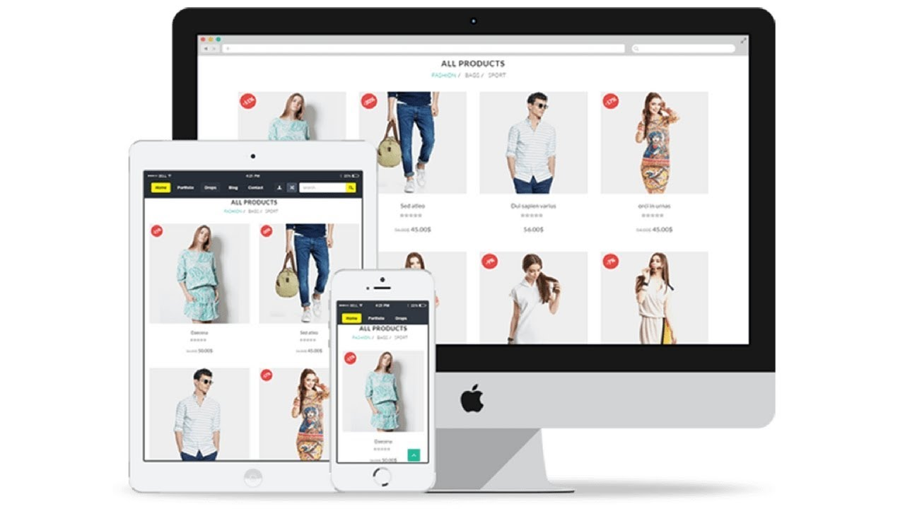

05 Best way to make money online
Maybe you want to create a separate stream of income to pay a few bills? Or, you’re simply looking for a way to replace your current job? Whatever your reason,
there are a ton of different ways how to make money online.
However, be careful — some of those methods can be malicious, as there are many
scams or other illegal activities out there.
Below you’ll find more than 05 different ways you can make money online
that actually work. Some involve creating your own website, but you’ll also find
methods that use the built-in audiences of existing platforms, and the different ways are:
01: Make money by Blogging
A lot of people start a blog as a way to express their views or as a creative outlet.

Blogging is one of the best way to earn money online. In blogging, you simple have to make blogs like Miss Thrifty , Skint dad etc.
Remember that it’s important to have a long-term vision. You won’t make money right away, but, as your writing improves, your skills grow, and your site picks up more traffic, it’s a definite possibility.
Here are some tips to keep in mind while starting th blog:
- Choose a broad topic like health, finance, relationships, hobbies, or
personal growth. - Always aim for quality and create the best possible source on any
given topic. - Learn about SEO and how to rank your site in search engines.
- Build a network with popular bloggers and other influencers.
These tips will lead you in the right direction. Once you have a trustworthy blog that gets a large volume of traffic you’ll have many opportunities to monetize your site, such as:
- Paid advertising
- Selling your own courses and products
- Selling affiliate products
02: Make money by Affiliate Marketing
An affiliate marketing site is built upon recommending or reviewing certain products. Then, when a reader buys that product through your link, you’ll receive a commission.
Affiliate Marketing is another best way to earn money. In this method you only have to make public or traffic by facebook , youtube or any other social-media site.
Then next step is to sign up to affiliate programs on different website like Amazon, Ebay or any other site.
How it works:
When any user click on your link which is provided by affiliate programs Websites and purchase something then you will get littel amount of commision.
If you have any type of question regardind Affiliate program than email me at zainnisarmughal@gmail.com
03: Make money by Ecommerce Website
E-Commerce sites have exploded in popularity in recent years. With the prevalence of platforms like WordPress and WooCommerce , creating an eCommerce site couldn’t be easier.
If you prefer dealing with physical products and selling something tangible,
then opening up an
eCommerce store could be a great fit.
There are two different methods of running a successful online store:
- Creating and selling a niche physical product to a dedicated group of buyers
- Purchasing cheaper goods manufactured in foreign countries, repackaging them, and selling them at a markup.
The first approach can be very successful, but it does require a passion for the product and the
willingness to do a ton of research, product development, and testing.
However, such success of stores like SkinnyMe Tea , Beardbrand ,
and Ratio Coffee shows that you can reach the
incredible results with your eCommerce store.
If the first approach seems a little risky for your first online business, then you might
consider the second option of reselling popular overseas products. This method involves
sourcing a popular product from a platform like
AliExpress, repacking the product, and selling it through your own storefront.
04: Make money by Youtube
YouTube is one of the world’s largest search engines. But, instead of searching for websites, people are looking for entertaining, fun, or informative videos.
You can monetize your YouTube channel by using their advertising system or sending your viewers to a website you’ve
monetized in another way.
You can think of building a YouTube channel in a similar fashion to creating a website,
except you’re creating videos, not written content.
If you feel comfortable in front of the camera, and want to try your luck creating videos, then you’ll need to figure out what your channel will be about. Typically, there are two types of YouTube channels out there that are most successful:
- Entertaining content. This style includes content like web series, comedy videos, pranks, reviews, video game walkthroughs, and a lot more.
- Educational content. This style is more geared towards, “How to” phrases. If you have useful skills or information you want to convey through a video, then this is a solid option for you.
Tips:
- Use a high-quality camera to record your videos.
- Experiment with different styles, formats, and editing techniques until you find one that gets the most traction.
- Optimize your video titles, descriptions, and images to get people to click
- Create a consistent video publishing schedule, so followers know when to expect your content
05: Make money by Freelancing
There are a ton of freelance sites full of hungry clients who are looking for someone with your skillset. There’s more demand for freelancers now than at any time in history.

Some of the most popular freelancing sites include:
To succeed on these platforms it’s important to establish a niche.
The worst thing you can do as a freelancer is brand yourself as a generalist.
Since the competition is so high, you’ll want to brand yourself as the only solution
to a specific type of client.
No matter your niche, it’s time to build out your profile, create some relevant samples that show off your skills, and start pitching.
The Auther

Zain Ul Abideen / @zainnisar
Zain is a freelance writer who specializes in technology and online content
marketing. He loves making complex marketing and technology topics accessible
to all readers. When he’s not glued to his screen, you can find
him lost in a book, writing poetry, or running through the woods.